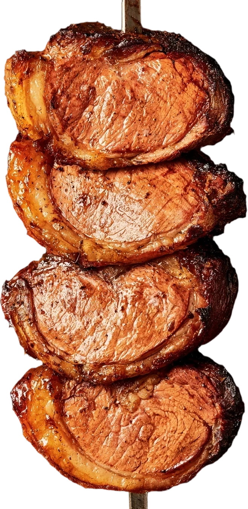
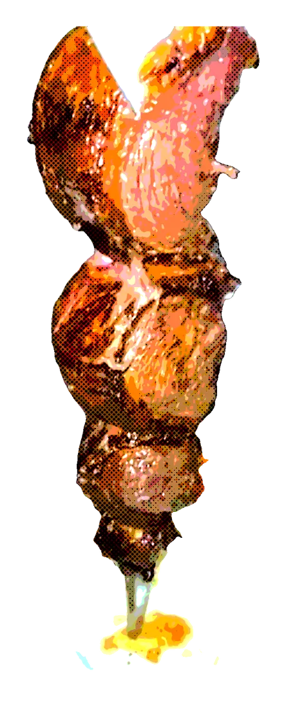
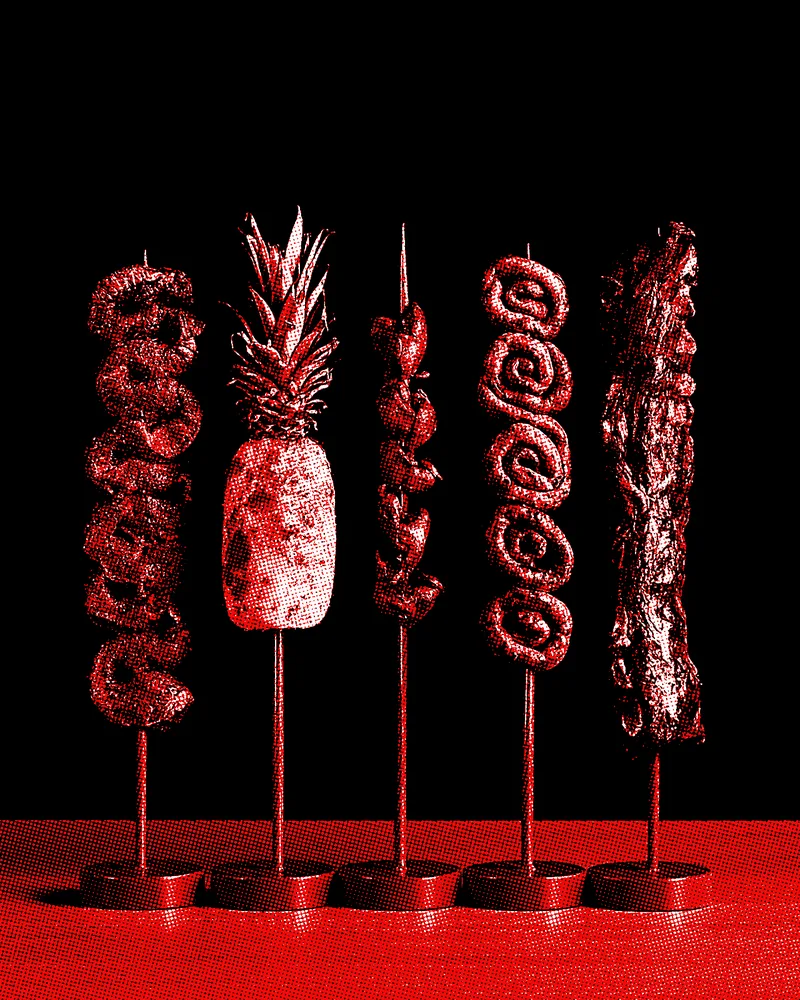
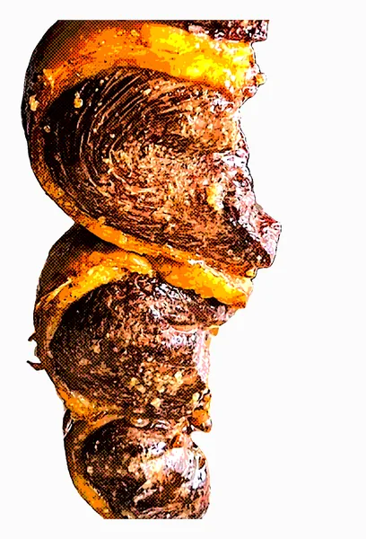
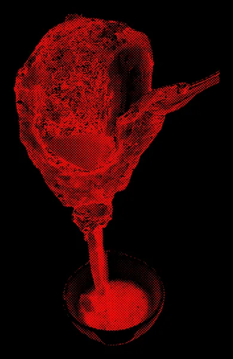
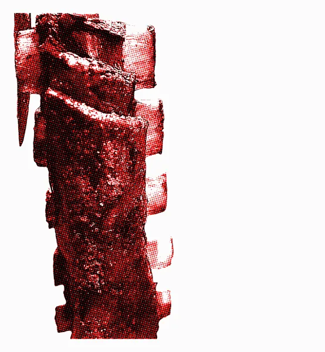
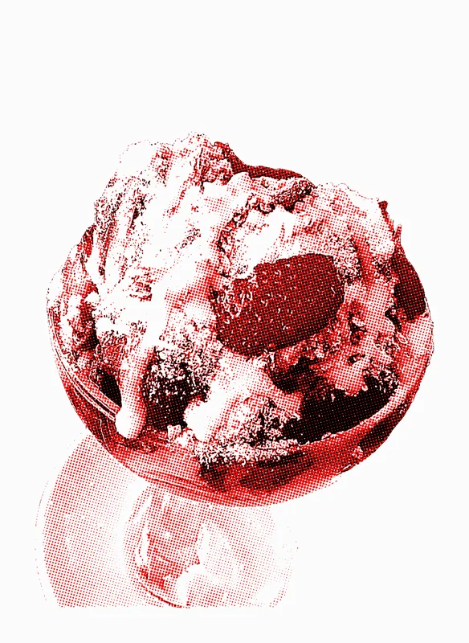
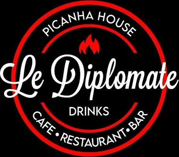

O BRASIL TEM
MORADA EM
DUDELANGE…
E O NOME É

Le Diplomate
Le Brésil a une adresse à Dudelange, et elle s'appelle Le Diplomate.
PICANHA HOUSE
Café, restaurant, bar.
9, route de Kayl, Dudelange
Infos et réservations

Rodízio de viande
à volonté
Aqui o rodízio é PESADO
Ici, le rodízio est généreux.
A melhor picanha com um preço justo
La meilleure picanha, à un prix juste.

Viandes mix grillées
Avec frites, ananas grillé, riz, haricots noirs, banane frite, vinaigrette, farofa et choux verts.



Plat du jour
Midi & soir
Prato do dia
Sugestões
- Peito de frango grelhado
- Bitoque
- Bifana
- Hambúrguer
- Omelete
- Salgados
Isto aqui não é açaí… é perigo
O nosso açaí é 100% vegano.
Attention : cet açaí est un danger.
Jus de fruits, plus de 20 saveurs. Mangue, corossol, fraise, cupuaçu, maracujá, ananas, acérola, goyave, orange, cajá.

Soirées
On mange d’abord. On danse après.
@diplomatelux

Reúne os amigos, a família ou aquela pessoa especial.
Venez entre amis, en famille ou à deux.
Infos et réservations
9, route de Kayl, Dudelange
Tous les jours, du matin à 1h
Commander : Wolt, Uber Eats, Wedely